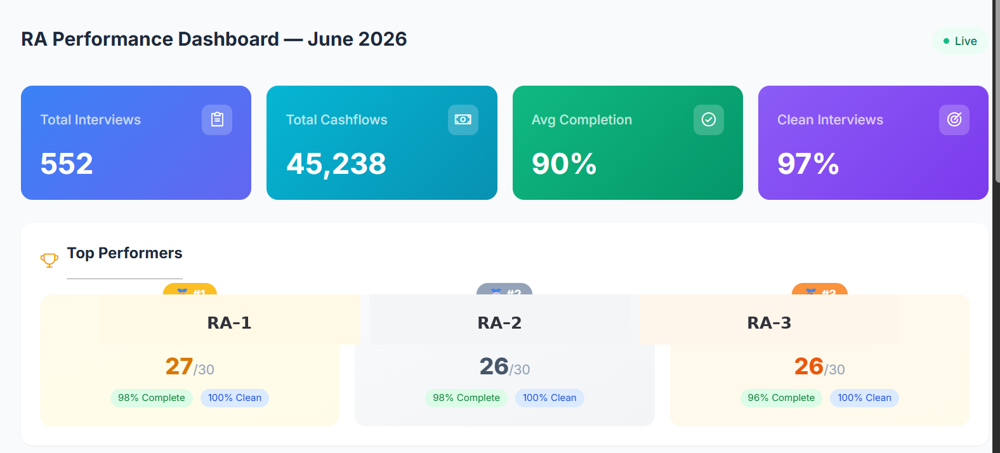
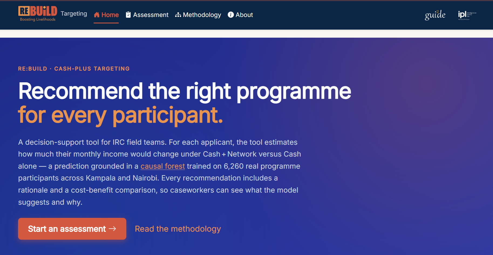

Research data systems
Study design, digital instruments, multi-country field teams, and HFCs that catch errors while collection is still running.
ODK · KoboToolbox · REDCap · HFC · XLSForm
Research Data Systems · Health & Development Programmes
I build the data systems and evidence products that make health and development programmes trustworthy.
From field instruments to policy-facing analysis: survey design in low-connectivity settings, high-frequency quality checks, pipelines that hold up under real operations, and decision tools for teams who cannot wait for a perfect spreadsheet. I work best close to the people, programmes, and constraints the data is meant to serve.

Expertise
Built for research and delivery teams operating under real field constraints — not classroom demos.
Study design, digital instruments, multi-country field teams, and HFCs that catch errors while collection is still running.
ODK · KoboToolbox · REDCap · HFC · XLSForm
Pipelines, validation layers, and live tools for supervisors — leaderboards, issue feeds, and dashboards on the study database.
SQL · R · Python · Streamlit · Shiny
Mixed methods, biostatistics, and evidence translation for funders, ministries, and programme leadership — including model-to-app targeting tools.
Stata · R · Causal methods · Power BI · Quarto
Process
Five steps. Quality, speed, and trust stay intact under real operations.
Protocols · ODK · Kobo · REDCap
Training · Supervision · Daily QC
SQL · R · Python · Validation
Biostats · Mixed methods · Causal
Dashboards · Shiny · Briefs
Selected Work
Programme data systems, field apps, and original health systems research. Methods-lab projects live under Projects when you want tooling samples.

Three hundred households over one year: HFCs, automated quality workflows, an RA leaderboard, and a fuel/issues app that aggregated field problems in real time as data streamed into the study database.
Read case study →
Shiny decision-support app for IRC field teams. I built the application layer from gui2de causal targeting models so caseworkers can score Cash vs Cash + Network with cost-aware rationale.
Case study & live app →
Seven-facility mixed-methods study on facility decision space, stockouts, and why clinics can diagnose but still fail to sustain hypertension and diabetes care.
Read thesis →Research data management for multi-year oncology records: REDCap architecture, quality systems, survival analysis, and a county-facing dashboard launched with local leadership.
Read delivery story →Writing
Three public pieces that match the work above — research translation, diaries systems, and model-to-field judgement.
Facility decision space and chronic care, from the BMC Public Health paper.
Read essay →300 households, HFCs, and live ops apps on a streaming study database.
Read note →Why domain knowledge still shapes useful targeting and ML systems.
Read note →Tools
No skill bars. Tools appear because they shipped something in the field or in analysis — not because of a self-score.
Background
A track record built through delivery, not just titles: research systems, public health analytics, cross-country fieldwork, and reporting that senior stakeholders can act on.
Georgetown University gui2de · Remote / Kenya
Health financial diaries systems for 300 households over one year (HFCs, automation, live field apps); Shiny application for Re:BUiLD cash-plus targeting with IRC partners.
KEMRI · Nairobi and Kisumu
Built integrated health analytics pipelines and survival-analysis workflows for surveillance, decision support, and partner reporting.
JOOUST and VLIR UOS · Kenya, Uganda, Rwanda
Coordinated cross-country datasets, supported randomized and quasi-experimental analysis, and trained teams on quality and reproducibility.
LERIS Hub · Kenya and Uganda
Designed monitoring frameworks and data-collection workflows, then delivered policy and donor reporting products for complex programmes.
JOOUST · Kenya
Thesis focus on financial determinants of effective hypertension and diabetes care in rural primary facilities.
University of Nairobi · Kenya
Second Class Upper Division.
Life Beyond Data
A window into the life that informs the work: communities, land, teams, and the long view behind the numbers.
 Goat Farming
Goat Farming KESHO Conference
KESHO Conference Community & Labour
Community & LabourWhether you need a research partner, an analyst embedded in your team, or someone to build the M&E system from scratch, I’d like to hear from you.
For teams building better health systems, stronger data infrastructure, and decision-ready evidence that can survive real-world operations.
Nairobi, Kenya. Open to remote and hybrid work, with replies usually within 48 hours.